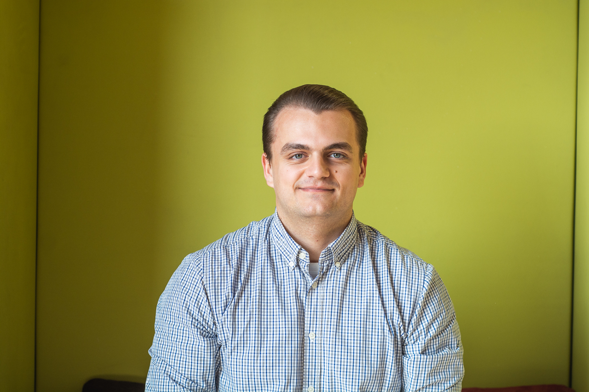

My name is Adib Zidan and I'm Syrian/Ukrainian. I'm 24 years old and I've been living in Austria for the past 5 years.
I'm also an upcoming Front-End Developer based in Vienna and will graduate really soon from New Austrian Coding School.
I'm more than grateful to be given this one in a life time opportunity to become a developer in the near future.
- My hobbies are:
- {{ hobby }}
